11월 26일 · US$1
UAD Thanksgiving $1 Plug-in (Universal Audio)
11월 26일, UAD 플러그인 10종 중 1종을 US$1에 구매할 수 있는 블랙프라이데이 프로모션입니다.
공식 페이지에서 사전등록 →매일 아침 새로 풀리는 무료 플러그인
무료·할인 플러그인 소식부터 작곡·믹싱 작업실 추천 장비까지
한곳에서 바로 확인하세요.
기준일 · 마감일은 업체 사정으로 조기 종료될 수 있습니다
새로 풀린 한시 무료 플러그인은 쇼츠가 공개된 직후 이곳에 하나씩 올라갑니다. 간단한 절차만 거치면 비용 없이 $0로 받을 수 있는 것들만 모읍니다.
11월 26일, UAD 플러그인 10종 중 1종을 US$1에 구매할 수 있는 블랙프라이데이 프로모션입니다.
공식 페이지에서 사전등록 →
808 베이스 프리셋 44종을 담은 Kontakt 악기입니다. Kontakt 풀버전 5.5.1 이상이 필요합니다.
배포 페이지에서 무료 받기 → 쇼츠로 받는 법 보기 ↗
원음과 압축된 소리를 섞을 수 있는 페달형 컴프레서입니다. AU·AAX·VST3를 지원합니다.
공식 페이지에서 무료 받기 → 쇼츠로 받는 법 보기 ↗
보컬 한 줄에서 여러 겹의 하모니를 만드는 플러그인입니다. Mac·Windows용 VST3·AU를 지원합니다.
공식 페이지에서 사전 등록 → 쇼츠로 받는 법 보기 ↗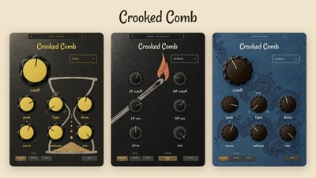
11가지 필터로 신스·드럼·기타의 톤을 바꾸고, XY 패드로 컷오프와 피크를 동시에 제어할 수 있습니다.
공식 페이지에서 받기 → 쇼츠로 받는 법 보기 ↗Audio Spices의 피치 시프팅 딜레이. 반복할 때마다 음정이 한 단계씩 쌓여 올라가는 CLIMB 모드가 핵심이고, 반음 단위로 최대 12도까지 피치를 옮길 수 있습니다.
지금은 이메일 사전 등록만 받고, 무료 수령은 11/27부터입니다. 받는 방법은 쇼츠에서 확인할 수 있습니다.
공식 페이지에서 사전 등록하기 → 쇼츠로 받는 법 보기 ↗
1975년 아날로그 신스 ARP Axxe를 그대로 되살린 가상악기. 오실레이터 1개·필터 1개라는 원형의 단순한 구조에 폴리포니·유니슨, 서브 오실레이터, X-Modifiers 모듈레이션, 16스텝 시퀀서와 아르페지에이터, 디스토션·아날로그 스테레오 딜레이·매트릭스 리버브, 빈티지 노브를 더했고 350개 이상의 프리셋을 담았습니다.
받는 방법은 쇼츠에서 확인할 수 있습니다.
공식 페이지에서 받기 → 쇼츠로 받는 법 보기 ↗
비틀스·오아시스·라디오헤드가 쓴 멜로트론 M400 테이프 사운드를 그대로 담은 가상악기. M-Tron Pro에서 고른 핵심 테이프 6종(MkII Violins·MkII Flute·Male Choir·GC3 Brass·Vibes·MkII Piano)에 A/B 레이어 Level·Pitch·Tone과 새 이펙트, 카테고리 프리셋 브라우저를 갖췄습니다.
받는 방법은 쇼츠에서 확인할 수 있습니다.
공식 페이지에서 받기 → 쇼츠로 받는 법 보기 ↗
무료 Kontakt Player로 바로 연주하는 칼림바 가상악기. 왼손·오른손 두 개의 패턴 플레이어가 실제 연주자처럼 굴리고 튕기는 칼림바를 만들어 주며, 패턴 100개·프리셋 14개·약 800샘플과 드론·자연음 5채널 레이어를 담았습니다.
받는 방법은 쇼츠에서 확인할 수 있습니다.
공식 페이지에서 받기 → 쇼츠로 받는 법 보기 ↗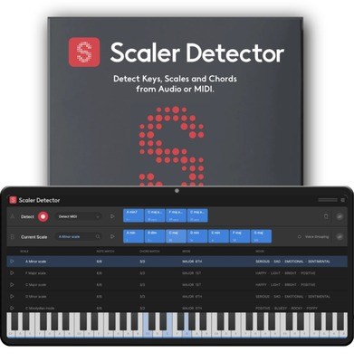
오디오·MIDI에서 키·스케일·코드를 즉시 검출하는 음악이론 플러그인. 샘플이나 연주를 넣으면 곡 전체의 조성과 코드를 찾아 주고, 어울리는 코드와 스케일까지 바로 제안합니다.
받는 방법은 쇼츠에서 확인할 수 있습니다.
공식 페이지에서 받기 → 쇼츠로 받는 법 보기 ↗
1976·1983년 첫 스튜디오 디지털 리버브의 거칠고 밀도 높은 질감을 되살린 빈티지 디지털 리버브. 모델 250·251과 12개 프로그램, 프리셋 56종을 담았습니다.
받는 방법은 쇼츠에서 확인할 수 있습니다.
공식 페이지에서 받기 → 쇼츠로 받는 법 보기 ↗
11월 27일 블랙프라이데이에 Waves가 내놓는 미공개 신작 플러그인. 이름과 기능은 아직 베일 속이고, 한정 수량 선착순으로 1인 1시리얼 무료 배포됩니다.
지금은 사전 알림 신청만 받고, 무료 수령은 11/27부터입니다. 받는 방법은 쇼츠에서 확인할 수 있습니다.
공식 페이지에서 사전 신청하기 → 쇼츠로 받는 법 보기 ↗
보컬 전용 디스토션. 따뜻한 빈티지 마이크 프리 느낌의 새추레이션부터 강한 오버드라이브까지 보컬에 캐릭터를 더해 줍니다. 입·출력 단에 각각 3단 슬로프 하이패스·로우패스 필터를 갖췄습니다.
지금은 사전 등록만 받고, 무료 수령은 11/27부터입니다. 받는 방법은 쇼츠에서 확인할 수 있습니다.
공식 페이지에서 사전 등록하기 → 쇼츠로 받는 법 보기 ↗
17개 개발사가 함께 내놓은 플러그인·사운드 17종 번들. 플러그인 9종 + Raizes Player 악기 1종 + 샘플팩 6종 + MIDI 컬렉션 1종이 한 번에 들어갑니다.
받는 방법은 쇼츠에서 확인할 수 있습니다.
공식 페이지에서 받기 → 쇼츠로 받는 법 보기 ↗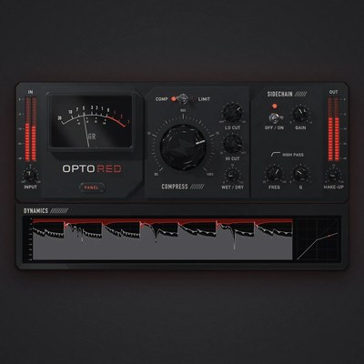
빈티지 옵토(Opto) 컴프레서 플러그인. 보컬·베이스·드럼 버스에 펀치감과 접착력을 더해 줍니다.
무료 배포는 끝났습니다. 아래 쇼츠는 당시 받는 방법 기록입니다.
공식 페이지(현재 $79) → 쇼츠로 받는 법 보기 ↗※ 무료 배포는 업체 사정으로 예고 없이 종료될 수 있습니다. 받으실 때 기간과 조건을 한 번 더 확인해 주세요.
무료 플러그인 받으면서 장비까지 한 번에 정리하세요. 카테고리 → 입문·프로 → 가격대 순서로 좁혀 보면 내 예산에 맞는 장비만 남습니다.
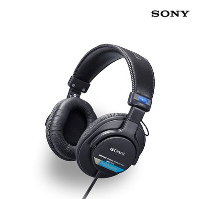
128,000원
모니터링의 기준점 같은 헤드폰. 접어서 가방에 넣고 다니기도 좋습니다.
쿠팡에서 보기 →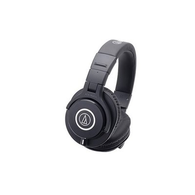
141,550원
M50x보다 평평한 성향. 오래 듣고 판단하기 좋은 밀폐형입니다.
쿠팡에서 보기 →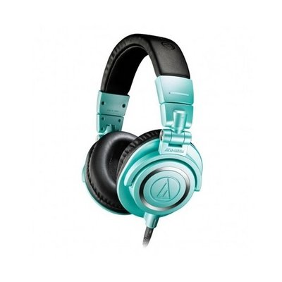
206,800원
저음이 단단해 작업 리듬이 잘 잡힙니다. 리뷰 790개대의 스테디셀러.
쿠팡에서 보기 →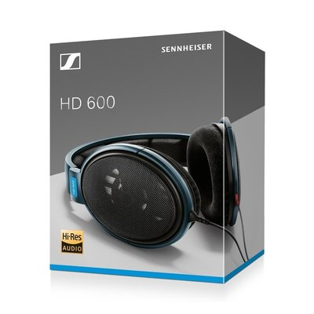
350,000원
오래 들어도 안 피로한 오픈형. 이 가격대에서 가장 믿는 소리.
쿠팡에서 보기 →
1,320,000원
노이만의 오픈형 모니터. 중역이 평평해 판단이 빨라집니다.
쿠팡에서 보기 →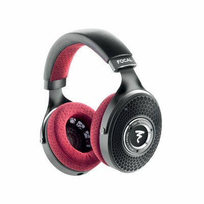
2,140,000원
해상도와 다이내믹을 함께. 마스터 확인용 오픈형입니다.
쿠팡에서 보기 →
2,240,000원
공간감의 끝판. 마지막 확인 단계에서 쓰는 헤드폰입니다.
쿠팡에서 보기 →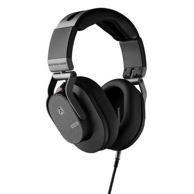
699,000원
오픈형 레퍼런스. 중역이 평평해 보컬 판단이 빠릅니다.
쿠팡에서 보기 →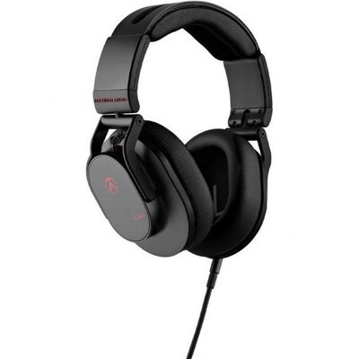
699,000원
밀폐형 프로 모니터. 오픈형 없이 한 대로 끝내려는 작업에 맞습니다.
쿠팡에서 보기 →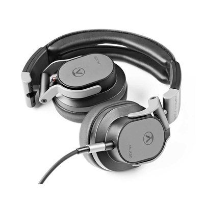
398,000원
이전 세대 밀폐형. 가격이 내려와 프로 사양을 저렴하게 쓰는 선택지입니다.
쿠팡에서 보기 →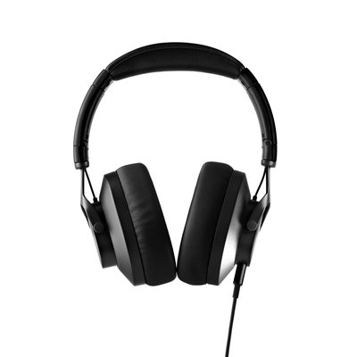
312,200원
가벼운 밀폐형. 장시간 써도 부담이 적은 무게입니다.
쿠팡에서 보기 →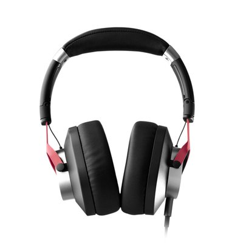
199,000원
오스트리안오디오 입문 밀폐형. 20만원 아래에서 프로 브랜드를 써 봅니다.
쿠팡에서 보기 →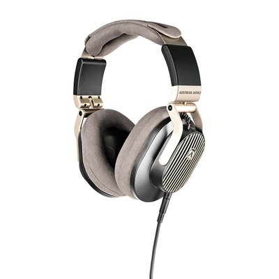
1,999,000원
하이엔드 오픈형. 마지막 확인 단계에서 쓰는 헤드폰입니다.
쿠팡에서 보기 →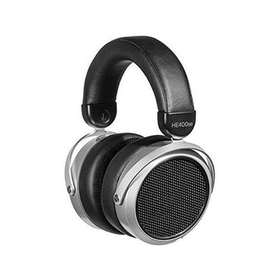
74,580원
평판형 입문의 기준. 7만원대에서 이 소리를 들을 수 있습니다.
쿠팡에서 보기 →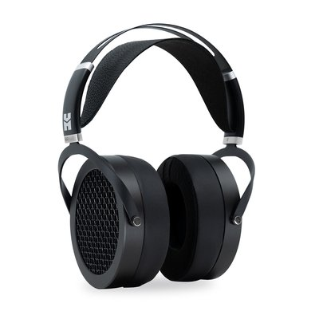
224,900원
평판형 스테디셀러. HD 600과 가장 자주 비교되는 선택입니다.
쿠팡에서 보기 →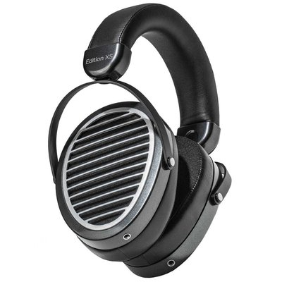
220,790원
무대가 넓은 평판형. 공간감이 중요한 믹스에 씁니다.
쿠팡에서 보기 →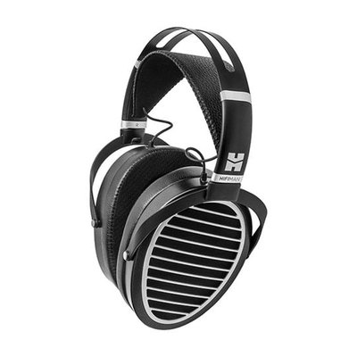
332,500원
자석을 개량한 스텔스 버전. Sundara에서 한 단계 올라갑니다.
쿠팡에서 보기 →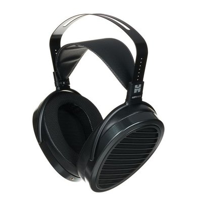
779,000원
하이파이맨 대표 오픈형. 해상도와 착용감의 균형이 좋습니다.
쿠팡에서 보기 →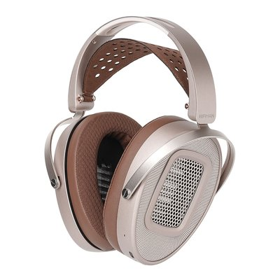
1,390,000원
플래그십 평판형. 마스터 확인용으로 쓰는 마지막 한 대입니다.
쿠팡에서 보기 →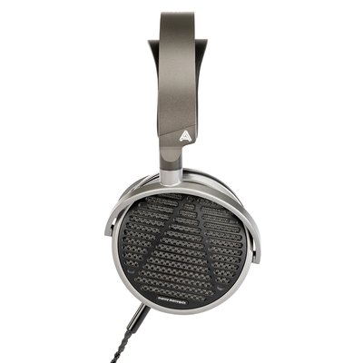
640,000원
오디지 입문 평판형. 무겁지 않고 모니터링에 맞춰 튜닝했습니다.
쿠팡에서 보기 →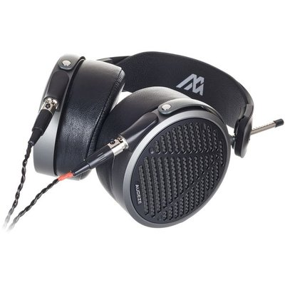
2,750,000원
프로 모니터링용 평판형. 믹스 판단을 위해 만든 모델입니다.
쿠팡에서 보기 →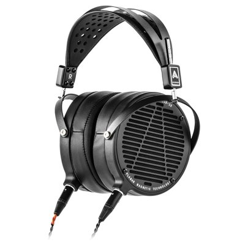
1,290,000원
오디지 클래식 사운드. 저역이 두툼한 평판형입니다.
쿠팡에서 보기 →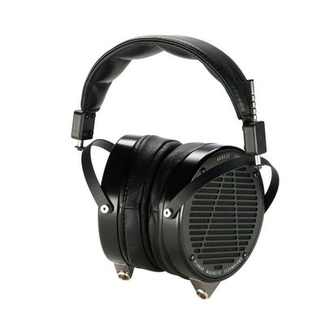
1,940,000원
케이블과 케이스까지 묶은 크리에이터 패키지. 한 번에 갖추는 구성입니다.
쿠팡에서 보기 →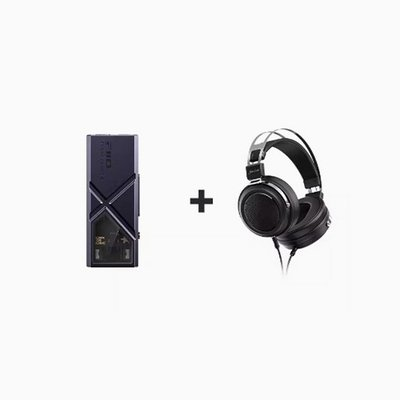
69,900원
7만원대 밀폐형. 서브 모니터로 한 대 더 두기 좋은 가격입니다.
쿠팡에서 보기 →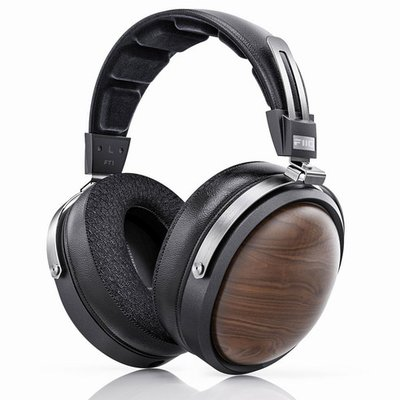
181,790원
우드 보울 밀폐형. 저음이 따뜻하게 들립니다.
쿠팡에서 보기 →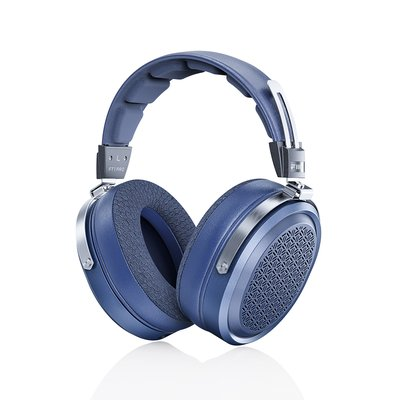
233,800원
오픈형 평판형. 무게 대비 착용감이 편합니다.
쿠팡에서 보기 →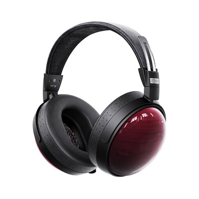
282,150원
밀폐형 상위 모델. 모니터링과 감상을 겸합니다.
쿠팡에서 보기 →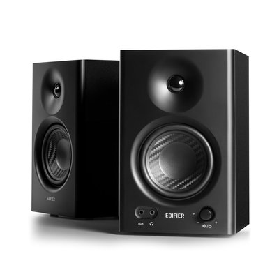
73,800원
책상 위 모니터 스피커 입문용. 이 가격에 밸런스가 이 정도인 게 신기합니다.
쿠팡에서 보기 →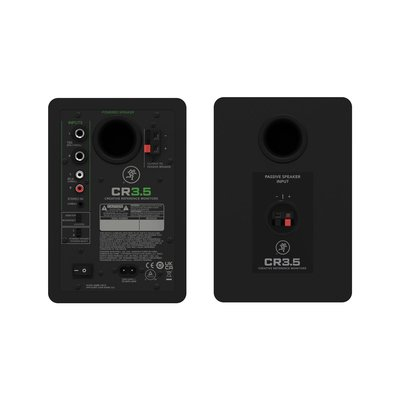
151,000원
작은 방 데스크에 딱 맞는 3.5인치. 첫 모니터로 무난합니다.
쿠팡에서 보기 →
219,000원
중저음을 살짝 부풀린 튜닝. 듣기 편하고 작업도 됩니다.
쿠팡에서 보기 →
620,000원
국룰 모니터. 소리가 정직해서 내 믹스의 문제가 그대로 들립니다. 2통(1조) 매치드페어 + 방진패드 구성입니다.
쿠팡에서 보기 →
1,840,000원
DSP 보정이 들어간 4인치. 좁은 방에서 특히 강합니다.
쿠팡에서 보기 →
2,360,000원
8030C 스테레오 한 조. 한 번에 갖추려면 이쪽이 낫습니다.
쿠팡에서 보기 →
99,560원
스테이지도 작업실도 버티는 다이내믹. 첫 마이크로 가장 무난합니다.
쿠팡에서 보기 →
130,000원
콘덴서 마이크 입문의 정석. 보컬·기타 다 잘 받습니다.
쿠팡에서 보기 →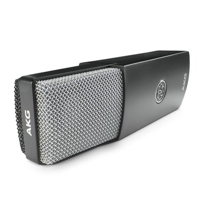
198,000원
H81 스탠드까지 세트. 좁은 공간 보컬 녹음에 쓰기 좋습니다.
쿠팡에서 보기 →
799,000원
방음 안 된 방에서도 보컬·나레이션 뽑는 다이내믹. 게인 넉넉한 오인페와 함께.
쿠팡에서 보기 →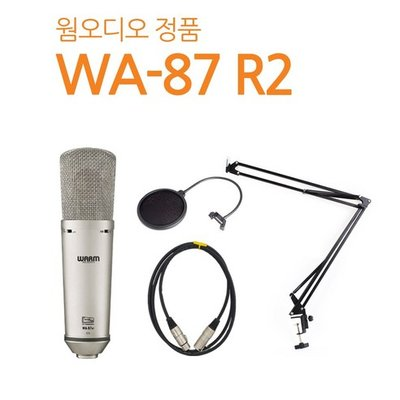
1,098,000원
U87 계열 복각 콘덴서. 보컬 톤이 두껍게 잡힙니다.
쿠팡에서 보기 →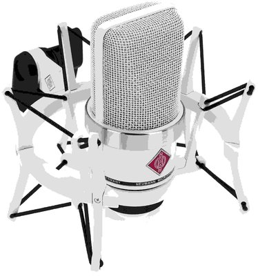
1,390,000원
노이만 입문 콘덴서. 작은 방에서도 저역이 과하지 않습니다.
쿠팡에서 보기 →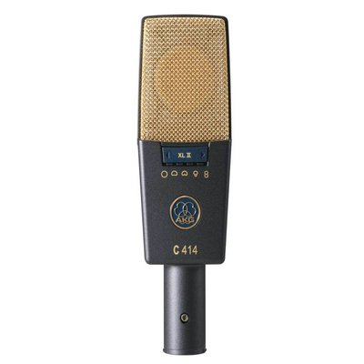
1,900,000원
패턴 전환이 자유로운 만능 콘덴서. 리뷰 85개의 검증된 모델.
쿠팡에서 보기 →
2,620,000원
보컬 원툴로 쓰는 노이만. 한 번 사면 오래 갑니다.
쿠팡에서 보기 →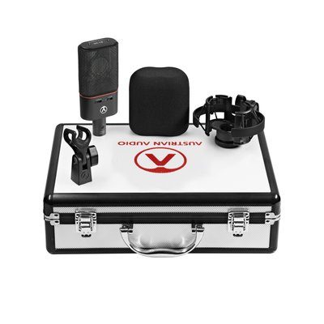
1,290,000원
대구경 콘덴서 스튜디오 세트. 보컬과 어쿠스틱 악기 모두 커버합니다.
쿠팡에서 보기 →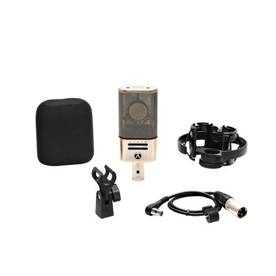
1,790,000원
출력과 지향 패턴을 바꿀 수 있는 콘덴서. 룸 녹음까지 확장됩니다.
쿠팡에서 보기 →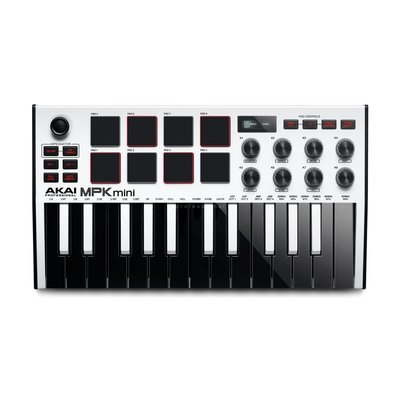
116,000원
책상 위에 올려 두기 좋은 미니 건반. 패드로 드럼 찍기도 편합니다.
쿠팡에서 보기 →
387,000원
61건반에 노브·페이더까지. 가상악기 컨트롤을 손에서 끝냅니다.
쿠팡에서 보기 →
495,000원
에이블톤과 붙여 쓰기 좋은 61건반. 스케일·코드 모드가 편합니다.
쿠팡에서 보기 →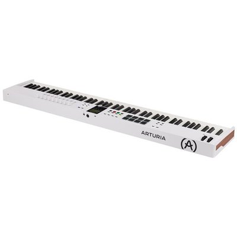
615,000원
풀사이즈 88건반을 100만 아래에서. 피아노 파트 작업에 좋습니다.
쿠팡에서 보기 →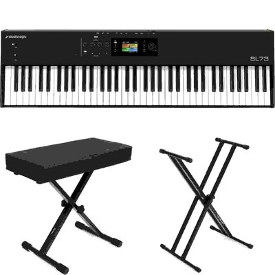
1,049,000원
해머액션 73건반. 무게 대비 연주감이 좋습니다.
쿠팡에서 보기 →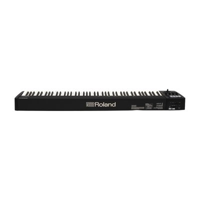
1,192,590원
무대용으로도 쓰는 88건반. 키감이 단단합니다.
쿠팡에서 보기 →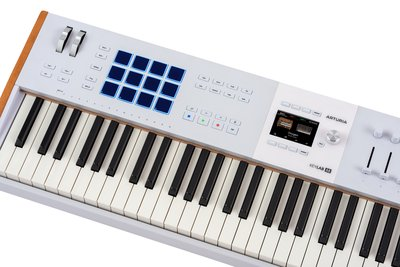
1,690,000원
해머액션 88건반에 아투리아 통합까지. 작업실 메인 건반으로.
쿠팡에서 보기 →
2,150,000원
NI 가상악기와 완전히 붙는 88건반. 브라우징이 편해집니다.
쿠팡에서 보기 →
219,000원
입문의 정석 1채널. 마이크 하나로 시작할 때 가장 무난합니다.
쿠팡에서 보기 →
284,880원
프리앰프 소리가 좋아 처음 쓰는 오인페로도 만족도가 높습니다.
쿠팡에서 보기 →
305,970원
2채널 입문 표준. 기타·보컬을 동시에 받기 좋습니다.
쿠팡에서 보기 →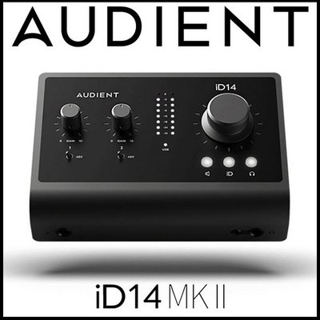
415,840원
ADAT 확장까지 되는 2채널. 나중에 장비를 늘려도 그대로 씁니다.
쿠팡에서 보기 →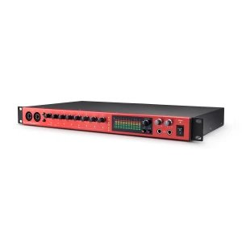
1,302,210원
8채널 프리앰프. 드럼을 한 번에 받을 때 씁니다.
쿠팡에서 보기 →
1,386,530원
휴대용인데 소리는 스튜디오급. RME 드라이버의 안정성.
쿠팡에서 보기 →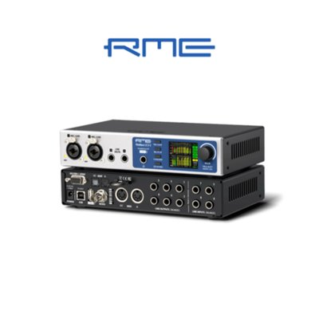
2,790,000원
입출력·안정성 모두 프로 기준. 오래 쓰는 인터페이스입니다.
쿠팡에서 보기 →
600,000원
88건반 해머액션 입문의 기준. 건반 무게감이 진짜 피아노에 가까워 손버릇 들이기 좋습니다.
쿠팡에서 보기 →
949,000원
PHA-4 건반에 블루투스까지. 미디 작업실에 피아노 감각을 더하고 싶을 때 무난한 선택.
쿠팡에서 보기 →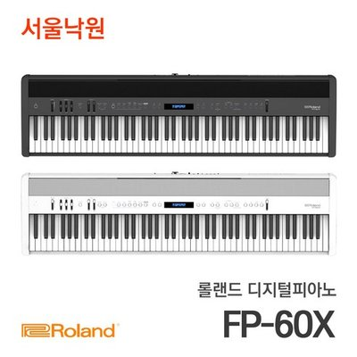
1,422,050원
FP 시리즈 중간 모델. 스피커를 갖춘 홈 연습용으로 balance가 좋습니다.
쿠팡에서 보기 →
2,680,000원
FP 최상위 모델. 홈 연습과 무대를 한 대로 해결합니다.
쿠팡에서 보기 →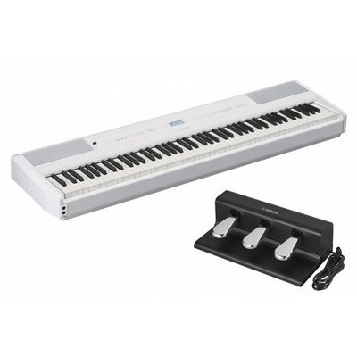
1,950,000원
야마하 P 시리즈 상위 모델. 목건반 감성의 휴대형입니다.
쿠팡에서 보기 →
249,000원
측정값 좋은 데스크탑 헤드폰앰프. 고임피던스 헤드폰도 힘 부족 없이 밀어줍니다.
쿠팡에서 보기 →
174,750원
토핑 입문 헤드폰앰프. NFCA 회로에 RCA 입력과 프리아웃까지 있어 첫 앰프로 무난합니다.
쿠팡에서 보기 →
226,200원
DAC까지 한 몸에 들어간 데스크탑 앰프. 오인페 없이 헤드폰만으로 작업을 시작할 때 좋습니다.
쿠팡에서 보기 →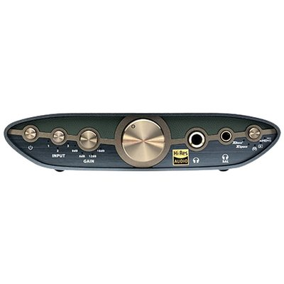
279,920원
아이파이 3세대 헤드폰앰프. 밸런스 출력과 베이스 부스트로 저음 확인이 편합니다.
쿠팡에서 보기 →
805,900원
완전 밸런스드 설계의 고출력 앰프. 까다로운 평판형 헤드폰까지 힘 있게 밀어줍니다.
쿠팡에서 보기 →
1,649,500원
SPL 스튜디오 헤드폰앰프. DA 컨버터 내장 모델이라 인터페이스 없이 바로 물릴 수 있습니다.
쿠팡에서 보기 →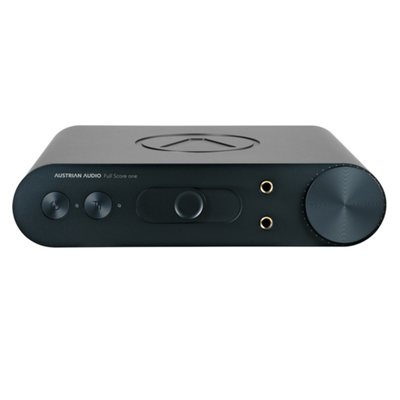
2,790,000원
오스트리안 오디오의 하이엔드 헤드폰앰프. 자사 Hi-X 시리즈와의 매칭을 염두에 둔 모델입니다.
쿠팡에서 보기 →
89,000원
8만 원대 MQA 디코더. AK4493S 칩에 DSD512까지 받는 가성비 DAC입니다.
쿠팡에서 보기 →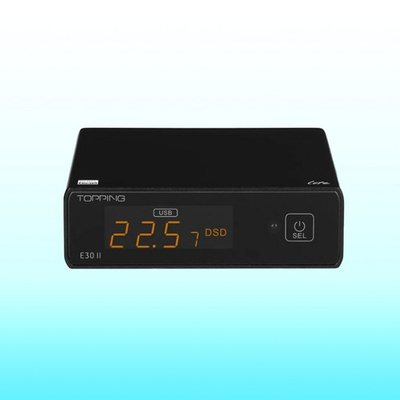
169,000원
토핑 2세대 보급형 DAC. 책상 위 작은 자리에 들어가는 입문용입니다.
쿠팡에서 보기 →
185,000원
디코더와 헤드폰앰프가 하나로 합쳐진 데스크탑 기기. PC와 직결해 쓰기 좋습니다.
쿠팡에서 보기 →
271,550원
아이파이 3세대 DAC. 밸런스 헤드폰 출력까지 달려 있어 모니터링용으로도 충분합니다.
쿠팡에서 보기 →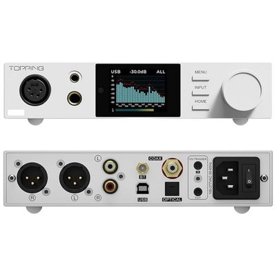
475,000원
VU 미터가 보이는 토핑 2세대 DAC/앰프. 계측과 재미를 같이 챙기는 중급기입니다.
쿠팡에서 보기 →931,500원
코드의 포터블 DAC. 스튜디오 밖에서도 같은 소리로 확인하고 싶을 때 들고 다니는 한 대입니다.
쿠팡에서 보기 →1,049,000원
피오 데스크탑 플래그십 DAC/앰프. 1년 보증 AS까지 붙어 있는 정식 판매분입니다.
쿠팡에서 보기 →
1,290,000원
RME 고해상도 AD/DA 컨버터. 모니터링 체인에 넣으면 기준이 되는 소리를 만들어 줍니다.
쿠팡에서 보기 →1,390,000원
토핑 플래그십 DAC/앰프. 데스크탑 한 대로 DAC와 헤드폰앰프를 끝내고 싶을 때 고릅니다.
쿠팡에서 보기 →1,510,000원
아이파이 포터블 플래그십 DAC. 출장·이동 작업에서도 데스크탑급 소리를 들고 다닙니다.
쿠팡에서 보기 →2,600,000원
토핑의 레퍼런스 DAC. 마스터링 판단 기준을 세우는 최상위 컨버터입니다.
쿠팡에서 보기 →695,000원
윈도우 조립 완본체. 예산을 본체보다 플러그인에 쓰고 싶을 때 선택합니다. 국대-02 사양(RTX 2060, 16GB, 256GB).
쿠팡에서 보기 →
1,408,860원
VST 작업의 가성비 본체. 모니터와 건반만 있으면 바로 작업실이 됩니다.
쿠팡에서 보기 →4,032,480원
책상에 두는 워크스테이션. 오케스트라 라이브러리도 여유 있게 올립니다.
쿠팡에서 보기 →
2,036,700원
팬이 없는 무소음 노트북. 이동 작업과 아이디어 스케치에 적합합니다.
쿠팡에서 보기 →3,290,000원
팬이 달린 14인치. 큰 세션도 버티는 이동용 본체입니다.
쿠팡에서 보기 →27,610원
조립 5분, 가격도 가벼운 기본 책상. 모니터 하나에 마스터건반까지 올리는 첫 세팅용입니다.
쿠팡에서 보기 →36,990원
같은 코멧 라인의 컴퓨터 책상. 옆 칸에 본체를 두고 케이블을 숨기기 좋습니다.
쿠팡에서 보기 →45,000원
철제 프레임 1200 폭. 스피커 스탠드를 올려도 흔들림이 적습니다.
쿠팡에서 보기 →23,800원
2만원대 철제 상판. 헤드셋 거치대가 붙어 있어 서브 데스크로도 씁니다.
쿠팡에서 보기 →57,300원
건반 높이에 맞춘 미디 전용 테이블. 61건반을 올려 두면 손목이 편합니다.
쿠팡에서 보기 →189,000원
32mm 원목 상판. 건반과 모니터를 한 번에 올려도 처짐이 없습니다.
쿠팡에서 보기 →209,000원
국내 제작 미디데스크. 하단에 건반·랙을 넣고 상판에 모니터를 올립니다. 배송비 3만원 별도.
쿠팡에서 보기 →418,000원
높이조절 미디데스크. 서서 작업하거나 의자 높이를 바꿀 때 유리합니다. 배송비·반품비 확인 필수.
쿠팡에서 보기 →44,900원
리뷰 2만 개대 메쉬 의자. 오래 앉는 작업의 첫 의자로 무난합니다.
쿠팡에서 보기 →43,400원
쿠션 두꺼운 사무용 의자. 긴 믹싱 세션에 엉덩이가 덜 아픕니다.
쿠팡에서 보기 →39,900원
등받이 지지가 강한 메쉬 의자. 자세가 무너지는 걸 잡아 줍니다.
쿠팡에서 보기 →129,900원
게이밍 의자지만 헤드레스트와 요추 지지가 있어 작업용으로도 씁니다.
쿠팡에서 보기 →190,030원
국산 사무의자 스테디셀러. 10만원대에서 허리 지지가 확실합니다.
쿠팡에서 보기 →1,369,900원
12년 보증 의자의 기준. 방문설치까지 포함된 구성입니다.
쿠팡에서 보기 →2,010,000원
요추·암레스트까지 조절되는 풀펑션 사양. 배송비 3만원 별도입니다.
쿠팡에서 보기 →
14,490원
2개 1세트 스탠드. 모니터 스피커를 귀 높이로 올리는 가장 싼 방법입니다.
쿠팡에서 보기 →38,900원
ST-08보다 키가 큰 스탠드. 5인치 모니터를 귀 높이에 맞추기 좋습니다.
쿠팡에서 보기 →51,500원
높이조절 플로어 스탠드 2개. 스피커를 책상 밖으로 빼면 저역이 정리됩니다.
쿠팡에서 보기 →119,000원
우드 상판 스탠드 2개. 진동을 잡아 주고 인테리어도 됩니다.
쿠팡에서 보기 →11,500원
스피커 아래 한 장. 책상 울림이 줄어 저역이 깨끗해집니다.
쿠팡에서 보기 →24,900원
우퍼 전용 방진 매트. 서브우퍼를 두는 바닥에 깔면 전달음이 줄어듭니다.
쿠팡에서 보기 →7,990원
리뷰 6천 개대 알루미늄 헤드폰 스탠드. 8천원으로 책상 위가 정리됩니다.
쿠팡에서 보기 →6,860원
6천원대 접이식 거치대. 안 쓰는 헤드폰을 책상 옆에 걸어 둡니다.
쿠팡에서 보기 →16,870원
알루미늄 거치대. 헤드밴드에 자국이 남지 않게 받쳐 줍니다.
쿠팡에서 보기 →28,880원
리뷰 8천 개대 싱글 모니터암. 모니터를 띄우면 그 자리에 스피커가 들어갑니다.
쿠팡에서 보기 →29,000원
국산 모니터암 스테디셀러. 클램프·관통 두 방식 모두 됩니다.
쿠팡에서 보기 →26,900원
가스스프링 싱글 암. 모니터를 자주 돌려 보는 작업에 편합니다.
쿠팡에서 보기 →17,990원
2만원 아래 모니터암. 서브 모니터용으로 부담 없습니다.
쿠팡에서 보기 →55,400원
고중량 듀얼 암. 27인치 두 대를 동시에 견딥니다.
쿠팡에서 보기 →16,730원
모니터 위 터치 조명. 악보를 볼 때 눈부심이 줄어듭니다.
쿠팡에서 보기 →41,700원
색온도를 바꿀 수 있는 스크린바. 늦은 작업 때 눈이 덜 피로합니다.
쿠팡에서 보기 →92,050원
국산 모니터바. 상판 반사가 적어 화면이 잘 보입니다.
쿠팡에서 보기 →279,000원
비대칭 광원 스크린바. 조명이 화면에 비치지 않습니다.
쿠팡에서 보기 →10,560원
RGB 16색 스트립. 작업실 뒷벽 무드용으로 가장 저렴한 선택입니다.
쿠팡에서 보기 →36,180원
RGB 스마트 전구. 데스크 조명 색을 분위기에 맞춰 바꿉니다.
쿠팡에서 보기 →19,500원
화면 색에 맞춰 조명이 따라가는 앰비언트 장치. 영상 작업에 유용합니다.
쿠팡에서 보기 →20,130원
부착식 방음판 12장. 반사음을 잡는 첫 단계입니다.
쿠팡에서 보기 →
10,710원
탑형 흡음폼 6장. 스피커 뒤벽 1차 반사점에 붙입니다.
쿠팡에서 보기 →34,060원
계란판 흡음재 8장. 넓은 면적을 저렴하게 채울 때 씁니다.
쿠팡에서 보기 →139,520원
흡음·차음을 겸한 아트보드 20장. 보컬 부스 대용으로 벽면을 덮습니다.
쿠팡에서 보기 →22,000원
저음 분산 타공보드. 방 안에 뭉친 저역을 풀어 줍니다.
쿠팡에서 보기 →58,500원
헬름홀츠 디퓨저. 특정 저역의 울림을 잡는 튜닝 아이템입니다.
쿠팡에서 보기 →65,200원
원목 확산판. 뒤벽 반사를 흩어 공간감을 살립니다.
쿠팡에서 보기 →4,500원
4,500원 멀티탭 정리함. 책상 밑 전선이 한 번에 정리됩니다.
쿠팡에서 보기 →4,500원
가장 많이 팔리는 전선정리함. 어댑터 여러 개가 한 칸에 들어갑니다.
쿠팡에서 보기 →14,060원
타공 없이 책상 밑에 멀티탭을 다는 선반. 배선이 바닥에서 떨어집니다.
쿠팡에서 보기 →9,900원
책상 뒷면 몰딩 트레이 2개. 케이블을 상판 아래로 숨깁니다.
쿠팡에서 보기 →9,700원
리뷰 1만 5천 개대 와이드 매트. 마우스 패드와 건반 받침을 겸합니다.
쿠팡에서 보기 →4,000원
4천원대 기본 매트. 색만 바꿔도 책상 인상이 달라집니다.
쿠팡에서 보기 →52,000원
마그네틱 정리형 매트. 케이블과 클립을 붙여 둘 수 있습니다.
쿠팡에서 보기 →17,650원
560mm 와이드 메탈 받침대. 모니터 아래에 건반과 오인페를 넣습니다.
쿠팡에서 보기 →29,900원
서랍형 받침대. 작은 공구와 케이블을 수납합니다.
쿠팡에서 보기 →6,400원
6천원대 원목 받침대. 모니터 높이만 살짝 올릴 때 씁니다.
쿠팡에서 보기 →8,700원
개별 스위치 3구에 안전커버까지. 리뷰 9만 개대 국민 멀티탭입니다.
쿠팡에서 보기 →15,500원
과부하 차단 순동 멀티탭 4구. 앰프와 오인페를 한 번에 물립니다.
쿠팡에서 보기 →5,100원
책상 옆면에 조여 붙이는 클램프형 걸이. 헤드폰을 상판에 두지 않아 작업 공간이 넓어집니다.
쿠팡에서 보기 →9,020원
360도 도는 걸이 2개 세트. 모니터링 헤드폰과 게임용 헤드셋을 나눠 걸어 둘 수 있습니다.
쿠팡에서 보기 →9,800원
관절로 각도와 높이를 잡는 리뷰 3만 개대 스테디셀러. 가사·악보를 띄운 태블릿을 건반 옆에 세워 둡니다.
쿠팡에서 보기 →11,800원
책상에 앉히는 탁상형 스탠드. 아이패드로 악보·가사를 띄워 두거나 컨트롤 앱을 띄우기 좋습니다.
쿠팡에서 보기 →12,100원
2단 미니 선반. 오인페·헤드폰앰프 같은 소형 장비를 모니터 옆에 층으로 올려 정리합니다.
쿠팡에서 보기 →17,230원
노트북을 세워 두는 수직 거치대. 상판 폭을 거의 쓰지 않아 서브 맥북을 옆에 두기 좋습니다.
쿠팡에서 보기 →25,410원
높이와 각도를 잡는 와이드 메탈 스탠드. 맥북을 눈높이로 올려 오래 앉아 작업할 때 목이 편합니다.
쿠팡에서 보기 →39,900원
맥세이프로 붙이고 자바라로 뻗는 거치대. 폰과 아이패드를 번갈아 붙여 모니터 옆에 세워 둡니다.
쿠팡에서 보기 →41,650원
듀얼 암 한쪽에 노트북 트레이를 다는 모델. 모니터 두 대와 맥북을 한 클램프에 묶어 책상을 비웁니다.
쿠팡에서 보기 →46,000원
리뷰 1,700개대 듀얼 암. 홀타입 브래킷까지 들어 있어 책상 구멍 타입에도 바로 달 수 있습니다.
쿠팡에서 보기 →12,800원
1만 원대 초가성비. 서브 이어폰이나 분실 대비용으로 부담이 없습니다.
쿠팡에서 보기 →22,660원
리뷰 4만 개대 베스트셀러. 가성비 ANC의 기준 같은 모델입니다.
쿠팡에서 보기 →22,900원
T13 계열 개선판. 배터리·연결 안정성을 다듬은 가성비 모델입니다.
쿠팡에서 보기 →23,500원
T13 ANC 후속. 2만 원대에 ANC·통화 품질을 챙긴 모델입니다.
쿠팡에서 보기 →23,700원
리뷰 5천 개대 보급형. 가볍게 쓰는 서브 이어폰으로 무난합니다.
쿠팡에서 보기 →24,900원
브리츠 보급형 ANC. 2만 원대에 노이즈 캔슬링을 써 보고 싶을 때입니다.
쿠팡에서 보기 →28,030원
2만 원대 ANC. 노이즈 캔슬링 입문용으로 가장 많이 팔리는 모델입니다.
쿠팡에서 보기 →29,300원
리뷰 5천 개대 보급형. 가벼운 커널형으로 첫 무선 이어폰으로 무난합니다.
쿠팡에서 보기 →30,900원
리뷰 2천 개대 가성비 ANC. 3만 원대로 부담 없는 모델입니다.
쿠팡에서 보기 →32,800원
러닝용 걸이형 무선. C타입 충전이라 케이블을 하나로 줄일 수 있습니다.
쿠팡에서 보기 →36,190원
계단식 디자인의 중급 QCY. 저역이 살아 있어 듣기 편합니다.
쿠팡에서 보기 →39,330원
귀걸이 오픈형. 운동 중에도 주변 소리를 들을 수 있습니다.
쿠팡에서 보기 →43,900원
QCY 상위 모델. 가격 대비 음질·ANC 균형이 좋습니다.
쿠팡에서 보기 →46,900원
오픈형 무선. 귀를 막지 않아 통화·사무용으로 쓰기 좋습니다.
쿠팡에서 보기 →48,900원
JBL 튜닝의 가성비 ANC. 저음이 살아 있어 대중음악 듣기 좋습니다.
쿠팡에서 보기 →52,340원
5만 원대 ANC 무선. 가격 대비 소리 완성도가 높은 모델입니다.
쿠팡에서 보기 →55,900원
사운드코어 오픈형. 귀를 막지 않아 통화·사무용으로 좋습니다.
쿠팡에서 보기 →74,900원
오픈형 보급 모델. 7만 원대에 젠하이저 튜닝을 듣고 싶을 때입니다.
쿠팡에서 보기 →75,840원
7만 원대 소니 ANC. 가볍고 착용감이 좋아 매일 쓰기 좋습니다.
쿠팡에서 보기 →85,820원
콜라보 ANC 무선. 캐릭터 디자인과 기본기를 함께 챙긴 모델입니다.
쿠팡에서 보기 →93,600원
클립형 오픈형. 귀걸이형으로 흘러내림 없이 오래 씁니다.
쿠팡에서 보기 →105,000원
final 무선 이어폰. ANC를 넣으면서 음질을 우선한 모델입니다.
쿠팡에서 보기 →112,410원
ANC 중심 모델. 저음이 단단해 대중음악 듣기 좋습니다.
쿠팡에서 보기 →125,000원
중급 ANC 모델. XM 시리즈보다 저렴하면서 ANC는 충실합니다.
쿠팡에서 보기 →125,900원
동축 하이브리드 ANC. 12만 원대로 음질 완성도가 높습니다.
쿠팡에서 보기 →129,200원
가격을 낮춘 버즈3 FE. 갤럭시 사용자의 첫 ANC 이어폰으로 좋습니다.
쿠팡에서 보기 →168,250원
버즈3 프로. 대화 감지·ANC 성능이 좋아 통화·이동용으로 무난합니다.
쿠팡에서 보기 →169,000원
보스 ANC를 낮은 가격에. 안정적인 착용감으로 통화용으로도 좋습니다.
쿠팡에서 보기 →170,100원
중급 ANC 모델. 모멘텀보다 저렴하게 젠하이저 무선을 쓰는 선택입니다.
쿠팡에서 보기 →179,100원
운동용 핏 강조 모델. 흘러내림이 적어 러닝·트레이닝에 적합합니다.
쿠팡에서 보기 →197,100원
오픈형 링 드라이버. 귀를 막지 않아 주변 소리를 들으며 작업하기 좋습니다.
쿠팡에서 보기 →198,900원
2026년형 에어팟. 노이즈 캔슬링이 기본으로 들어간 아이폰 표준 이어폰입니다.
쿠팡에서 보기 →203,300원
골전도 통화용. 오래 통화하는 현장 작업·운동에 맞는 헤드셋형입니다.
쿠팡에서 보기 →209,000원
게이밍용 무선. 2.4GHz 동글과 저지연이 필요한 PC 게임에 맞습니다.
쿠팡에서 보기 →211,770원
버즈4 기본형. 프로보다 가볍고 가격 부담이 적은 최신 모델입니다.
쿠팡에서 보기 →214,900원
최신 ANC 상위 모델. 통화 품질과 배터리가 강합니다.
쿠팡에서 보기 →228,900원
에어팟 5의 무선충전 케이스 버전. 충전 케이스를 자주 쓰는 분께 편합니다.
쿠팡에서 보기 →236,550원
골전도 러닝 이어폰. 귀를 완전히 막지 않아 야외 운동에 안전합니다.
쿠팡에서 보기 →236,600원
운동용 오픈형. 땀·흘러내림에 강하게 설계된 모델입니다.
쿠팡에서 보기 →240,150원
귀걸이형 오픈 무선. 안경·마스크와 간섭이 적어 장시간 착용에 편합니다.
쿠팡에서 보기 →248,500원
리뷰 2만 개대의 스테디셀러. 가성비 좋은 갤럭시 ANC 이어폰입니다.
쿠팡에서 보기 →
269,100원
젠하이저 하이엔드 무선. 음질 우선으로 고른 ANC 이어폰입니다.
쿠팡에서 보기 →279,000원
클립형 오픈 무선. 귀를 막지 않고 통화·회의용으로 쓰기 좋습니다.
쿠팡에서 보기 →279,000원
오픈형 프리미엄. 귀를 막지 않으면서 소리 밀도가 높은 모델입니다.
쿠팡에서 보기 →289,000원
소니 플래그십 ANC. 노이즈 캔슬링과 음질 균형이 좋아 이동 작업에 강합니다.
쿠팡에서 보기 →295,000원
갤럭시 최상위 ANC 버즈. 안드로이드에서 지연·코덱 이점이 큽니다.
쿠팡에서 보기 →
296,000원
에어팟 프로 최신형. 이어팁 밀폐형 ANC라 이동 중 모니터링에 가장 무난합니다.
쿠팡에서 보기 →298,000원
2026년 갤럭시 버즈 신형. 오픈형에 가까운 착용감으로 오래 써도 편합니다.
쿠팡에서 보기 →299,900원
리버티 최상위. ANC와 음질을 최대로 끌어올린 모델입니다.
쿠팡에서 보기 →309,000원
보스 최상위 ANC. 노이즈 캔슬링 성능은 이동·비행에서 특히 강합니다.
쿠팡에서 보기 →384,570원
XM5 후속 최신 플래그십. ANC·통화 품질이 한 단계 올라간 모델입니다.
쿠팡에서 보기 →399,000원
모멘텀 최신형. 해상도와 ANC를 함께 챙긴 상위 모델입니다.
쿠팡에서 보기 →9,800원
리뷰 3천 개대 초가성비 인이어. 처음 인이어를 쓸 때 무난합니다.
쿠팡에서 보기 →9,900원
리뷰 약 2만 개의 국민 유선 이어폰. 1만 원 이하 보조용으로 최적입니다.
쿠팡에서 보기 →11,690원
3.5mm AKG 번들. 라디오 수신까지 되는 갤럭시 정품형입니다.
쿠팡에서 보기 →11,700원
갤럭시 구형 번들. 저렴한 예비용으로 많이 사는 모델입니다.
쿠팡에서 보기 →12,720원
C타입 내장 DAC 모델. 폰에서 소리 크기·잡음을 잡아 줍니다.
쿠팡에서 보기 →14,000원
1만 원대 다이나믹. 케이블 분리형이라 관리가 쉽습니다.
쿠팡에서 보기 →16,680원
1만 원대 분리형 인이어. 입문용으로 평가가 좋습니다.
쿠팡에서 보기 →18,500원
1만 원대 3.5mm 유선. 가볍게 쓰는 보조 이어폰입니다.
쿠팡에서 보기 →18,920원
갤럭시 번들 C타입. 리뷰 7천 개대의 가장 무난한 유선 이어폰입니다.
쿠팡에서 보기 →21,360원
MT1 상위 모델. 해상도와 저역을 함께 올린 가성비 인이어입니다.
쿠팡에서 보기 →22,420원
국내 브랜드 유선 인이어. 이어팁 호환성과 착용감이 좋습니다.
쿠팡에서 보기 →22,600원
KZ 분리형 케이블 기본 모델. 첫 인이어 입문용으로 무난합니다.
쿠팡에서 보기 →25,000원
저역 강조 튜닝. 2만 원대에 저음 위주로 듣고 싶을 때 좋습니다.
쿠팡에서 보기 →25,900원
오픈형 이어버드. 귀에 걸치듯 쓰는 전통적인 형태를 찾을 때입니다.
쿠팡에서 보기 →26,600원
C타입 이어팟. 지연이 없어 아이폰·맥에서 영상 편집할 때 쓰기 좋습니다.
쿠팡에서 보기 →28,320원
2만 원대 final 인이어. 평평한 성향으로 판단용으로 좋습니다.
쿠팡에서 보기 →29,000원
C타입 유선. 2만 원대로 폰·노트북에 바로 연결합니다.
쿠팡에서 보기 →30,860원
게이밍 성향 튜닝. 위치감이 좋아 FPS 게임에 맞습니다.
쿠팡에서 보기 →33,150원
C타입 유선 이어폰. 이어폰 잭 없는 최근 폰·노트북에 바로 꽂습니다.
쿠팡에서 보기 →36,900원
게이밍 유선. 리뷰 1만 개대에 발소리 방향 파악이 쉽습니다.
쿠팡에서 보기 →37,050원
3만 원대 유선 커널형. 통화·영상용 보조 이어폰으로 부담 없습니다.
쿠팡에서 보기 →41,110원
하이브리드 10드라이버급 구성. 가성비 인이어의 대표 모델입니다.
쿠팡에서 보기 →43,890원
솔리드 베이스 C타입. 저역이 풍부한 유선 모델입니다.
쿠팡에서 보기 →47,200원
E1000 상위 모델. 알루미늄 하우징에 저역이 조금 더 들어갑니다.
쿠팡에서 보기 →56,900원
C타입 ANC 유선. 잭 없는 폰에서 노이즈 캔슬링을 쓰는 방법입니다.
쿠팡에서 보기 →57,700원
5만 원대 final. 부드러운 음색으로 오래 듣기 좋습니다.
쿠팡에서 보기 →59,070원
베릴륨 10mm 싱글 드라이버. 5만 원대로 평가가 좋은 입문 인이어입니다.
쿠팡에서 보기 →60,200원
1DD+5BA 구성. KZ 라인에서 해상도가 높은 편입니다.
쿠팡에서 보기 →84,000원
게이밍·ASMR용. 방향감이 좋아 게임·영상 작업에 맞습니다.
쿠팡에서 보기 →84,880원
3드라이버 게이밍 이어폰. 게임·영상에서 위치감이 좋습니다.
쿠팡에서 보기 →
116,600원
알루미늄 합금 하우징 인이어. 저렴한 가격에 튜닝이 안정적입니다.
쿠팡에서 보기 →131,910원
한정 콜라보 인이어. 디자인과 튜닝을 함께 원할 때입니다.
쿠팡에서 보기 →136,500원
A 시리즈 입문. 중고역 표현이 좋아 보컬 확인에 유리합니다.
쿠팡에서 보기 →141,550원
프로 모니터링 인이어. 분리형 케이블로 무대에서 쓰기 좋습니다.
쿠팡에서 보기 →148,000원
소니 인이어 모니터. 밀폐형 무대 모니터링 라인의 보급 모델입니다.
쿠팡에서 보기 →149,000원
인이어 입문 모델. 젠하이저 IE 라인의 시작점으로 평가가 좋습니다.
쿠팡에서 보기 →157,500원
A3000 상위 모델. 해상도가 한 단계 올라간 인이어입니다.
쿠팡에서 보기 →175,000원
무대 모니터링의 표준. 17만 원대에 가장 검증된 인이어입니다.
쿠팡에서 보기 →175,980원
17만 원대 final. 고음질 유선을 원할 때 무난한 선택입니다.
쿠팡에서 보기 →188,000원
무대 모니터링용 인이어. 밀폐력이 좋아 보컬·세션 모니터로 적합합니다.
쿠팡에서 보기 →189,000원
SE215 스페셜 에디션. 케이블·디자인을 다듬은 버전입니다.
쿠팡에서 보기 →199,000원
IE 200 상위 모델. 저역이 단단해 대중음악 모니터링에 편합니다.
쿠팡에서 보기 →390,000원
final 유선 상위 모델. 부드럽고 밀도 있는 소리로 평가가 좋습니다.
쿠팡에서 보기 →463,000원
듀얼 BA 모델. 중역이 맑아 보컬 모니터용으로 많이 씁니다.
쿠팡에서 보기 →
616,550원
하이엔드 인이어. 해상도가 높아 믹스 확인용으로 쓰기 좋습니다.
쿠팡에서 보기 →725,000원
트리플 BA 모델. 무대·스튜디오 겸용으로 오래 쓰인 스테디셀러입니다.
쿠팡에서 보기 →825,000원
SE535 한정 색상판. 성능은 같고 레드 컬러로 구분됩니다.
쿠팡에서 보기 →877,000원
크리나클 협업 하이브리드. 리뷰 기반 튜닝의 상위 인이어입니다.
쿠팡에서 보기 →1,274,000원
플래그십 인이어. 100만 원대 이상 현업용 모니터입니다.
쿠팡에서 보기 →1,320,500원
플래그십 인이어. 세부 표현력이 좋아 마스터 체크용 최상위 모델입니다.
쿠팡에서 보기 →
1,666,000원
4 BA 플래그십 인이어. 저역 조절 필터까지 갖춘 현업 모니터입니다.
쿠팡에서 보기 →조건에 맞는 장비가 없습니다
다른 카테고리나 가격대를 골라 보세요.
안내 — 쿠팡에서 보기 버튼은 쿠팡 파트너스 단축 링크입니다. 이 페이지의 장비 링크는 쿠팡 파트너스 활동의 일환으로, 이에 따른 일정액의 수수료를 제공받습니다.